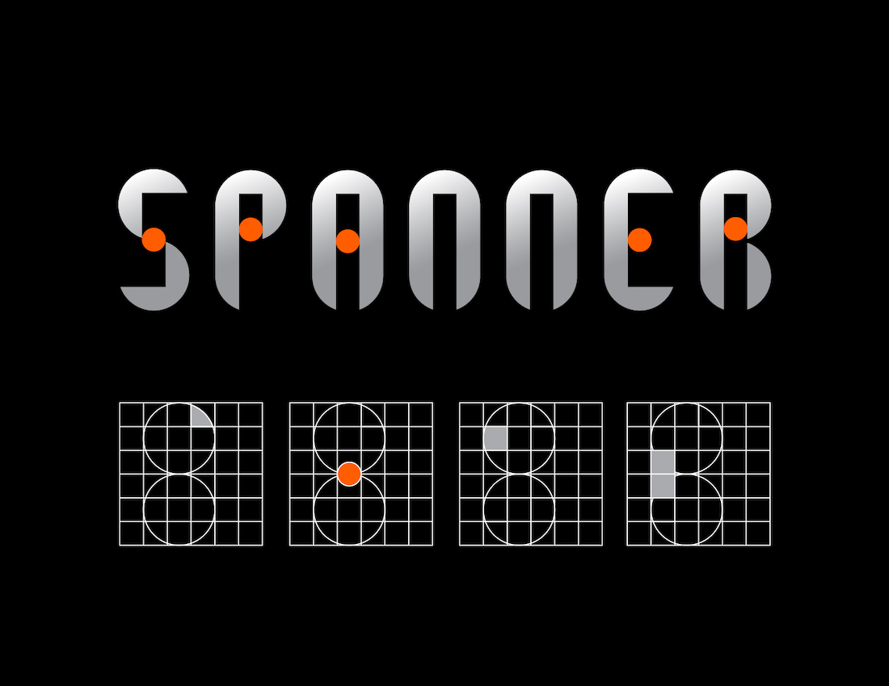

A set of Modular Alphabet Design based on a system, using the least amount of components and elements to create alphabets of uniformity. Working in a grid system, I applied elements of quarter circles, dots, squares, and rectangles to create typography. The set of typography was inspired by the tool spanner when looking at the letter “Y”, it is a silhouette of the shape spanner. The font goes with two colors, one on the body and one on the dot as an iconic visual system appearing throughout the typography.

